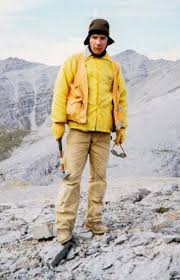

Rocky Reifenstuhl
"Dad, husband, brother, freezer-geezer, cyclist, geologist, Alaskan, friend and general pain-in-the-ass."

- 1976 - Graduated for West Virginia University with a BA in Geology
- 1981 - Graduated from UAF with a MS in Geology
- 1998 - 1st Place Iditabike Finish
- 1999 - 1st Place Iditabike Finish
- 2000 - 1st Place Iditabike Finish
- 2003 - Yukon Arctic Ultra 300 Mile 1st Place
- 2004 - Yukon Arctic Ultra 300 Mile 1st Place
- 2009 - Retired from the Alaska Division of Geological & Geophyscal Surveys (DGGS) after 27 years
- January 31st, 2014 - Rocky passes away at 61 after dealing with cardiac issues and waiting for a heart transplant
"One day, this race resume is going to stop growing. The next day, I get placed in a pine box."